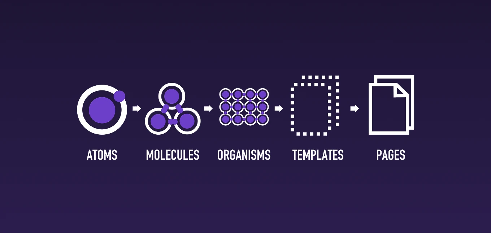
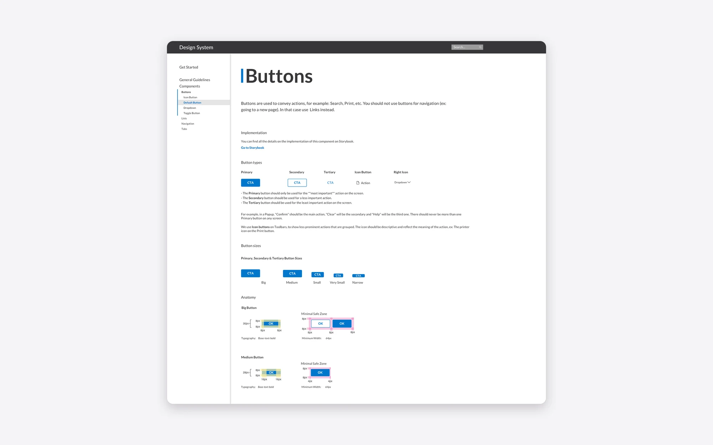
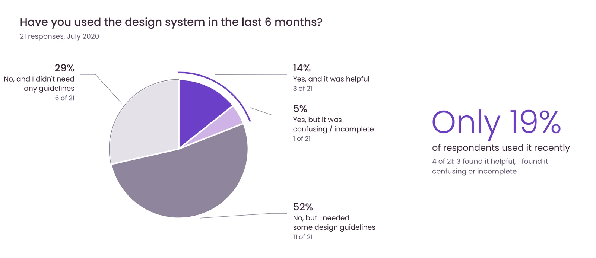

Overview
The company* is a web platform that helps legal and financial professionals manage regulatory documents and stay compliant with the SEC (U.S. Securities and Exchange Commission), offering 15+ applications for specialized searches and reporting tasks.
*Company name is hidden for confidentiality reasons.
In this project, I created a unified Design System to serve as the single source of truth across the platform's ecosystem.
With so many applications built by different teams, the platform’s ecosystem suffered from inconsistent UI patterns and redundant components. These inconsistencies confused users, slowed design delivery, and increased development complexity.
The company would not allocate developer time to maintain a React component library. So the design team built a system that worked without it.
Problem statement
How might we centralize design specs in one place that is simple to maintain and that every team uses?
The Design System Team
Depending on project resources, the team had 1 to 3 designers and up to 2 developers.
Another designer started the project and left the company a few months in. I took over as the primary contributor. I created and maintained the Design System and the shared Sketch component library, and I advocated for both across teams.
As more designers joined, I became the senior designer on the team. In June 2022, I was promoted to UX Lead. The Design System became one of several team goals I owned.
Outcomes
We delivered a Sketch library, Zeplin specs, a React component library in Storybook, and a documentation site in Grav.
The company did not allocate developer time to maintain the React library. We designed the system to work anyway.
- A consistent design foundation. The Sketch library kept our design work consistent and simpler across 15+ applications.
- A relaunch led by research. A survey of developers and QA members shaped our tooling. Zeplin became the spec tool, and the React repository became the developers' source. Weekly meetings with developers started in September 2021.
- A leaner system. I proposed moving to Figma only in my promotion presentation. It retires Sketch, Abstract, and Zeplin, needs little or no developer time, and gives developers and QA clearer handoff files.
Design Process
- Research & inventory: how do teams document today, and what do they need?
- Defining a framework: which structure fits the system?
- Build and launch: one library, one place for specs
- Measure and adapt: is anyone using it?
1. Research & inventory
I started with research to understand needs and pain points.
- I conducted user interviews with developers, QA, and stakeholders.
- I conducted a full component audit to identify styling and usage inconsistencies, then created a prioritized list for unification.
2. Defining a framework
We structured the system with Atomic Design: atoms, molecules, organisms, templates, and pages. It gave the team a shared way to decide what counts as a component.

3. Build and launch
The design team refined each audited component, then launched the system with four pieces:
- Sketch library for designers. One file, linked to every project file as a library. It covered buttons, tabs, tooltips, popups, table rows, icons, colors, and font styles.
- Zeplin library linked to Sketch, with specs and handoff details for each component.
- Documentation site in Grav CMS. It gave guidance on styling, usage, and spacing, plus technical notes for developers, such as environments and code best practices.
- Storybook library built by front-end developers. The documentation site linked each component to its React counterpart.

4. Measure and adapt
I surveyed developers and QA members and met with key collaborators to understand adoption. Then we adapted the tooling to what they needed. Details below.
Design System Evolution
- Jul 2019Project kick-offResearch and components inventory.
- Sep 2019First version launchSketch library, Zeplin, and a documentation site in Grav.
- Jun 2020Second windUsage survey and documentation discussions.
- Sep 2021New design system teamWeekly meetings, with developers working on React components.
- Jan 2023MaintenanceSketch library updates only, no more developer time.
- FutureFuture plansGet more developer time. Migrate to Figma.
After launch, designers left, and new high-priority projects started. The design system stopped being a priority. Designers kept using it and maintaining it, but no more dev time was allocated to maintain the Storybook counterpart.
Almost a year later, management added a relaunch to its yearly objectives. Before relaunching, I wanted to know why adoption was low outside of the design team. I ran a survey with developers and QA members (21 responses) and held meetings with key collaborators.
Main insights
The survey shaped the relaunch. It changed which tools we used and what we asked developers to do.
Only 19% of respondents had used the design system in the last six months (4 of 21).

The survey and meetings showed three things:
- People did not look in one place. Only 4 of 21 checked the documentation site when they had a question. They asked the UX team (13), opened the Miro board (13), checked Zeplin (11), or asked product managers (11). There was no clear source of truth.
- People wanted specs and foundations first. Component specs (16), icons, fonts, and colors (15), and do's and don'ts (15) led the list. Code patterns, snippets, and APIs ranked lower (4–7).
- Developers wanted a code repository, not documentation. They cared little about design details. They wanted one central repository of React components with the right styling built in.
We made two decisions:
- Zeplin became the main tool for design specs.
- The React repository became the developers' source.
The React components and the Sketch library had drifted apart, so we asked for developer hours to review the repository.
Final results
The system kept evolving as sprint priorities and available resources changed. In September 2021, a new design system team started weekly meetings, and developers worked on React components. But the developers kept moving to new feature projects. By January 2023, only the Sketch library received updates.
At my promotion presentation, I proposed a process that needed little or no developer time: use Figma only, and retire Sketch, Abstract, and Zeplin. Consolidating tools would save costs and give developers and QA clearer mockup documentation.
After my promotion in June 2022, new designers joined the team. We planned to prove the system's value with metrics: inconsistencies, bugs, and rework.
By January 2023, the UX team was growing. We planned to ask for development time again and confirmed the migration to Figma.
Key lessons learned
- Build for the resources you have. With no developer time, we kept the design source lean. Designers owned it, and Figma would replace three tools.
- Make it cross-functional from the start. A Design System can’t thrive if it's siloed within the design team. Input from developers, QA, and product leads ensures broader relevance and buy-in.
- Put it where people already look. Only 4 of 21 checked our documentation site, while 11 already used Zeplin. We made Zeplin the main spec tool.
- Make it easy to find, maintain, and update for everyone.
- Communicate in trusted channels. Clear, consistent communication is essential. Share updates through widely used channels to ensure adoption and alignment.
Thanks for reading!